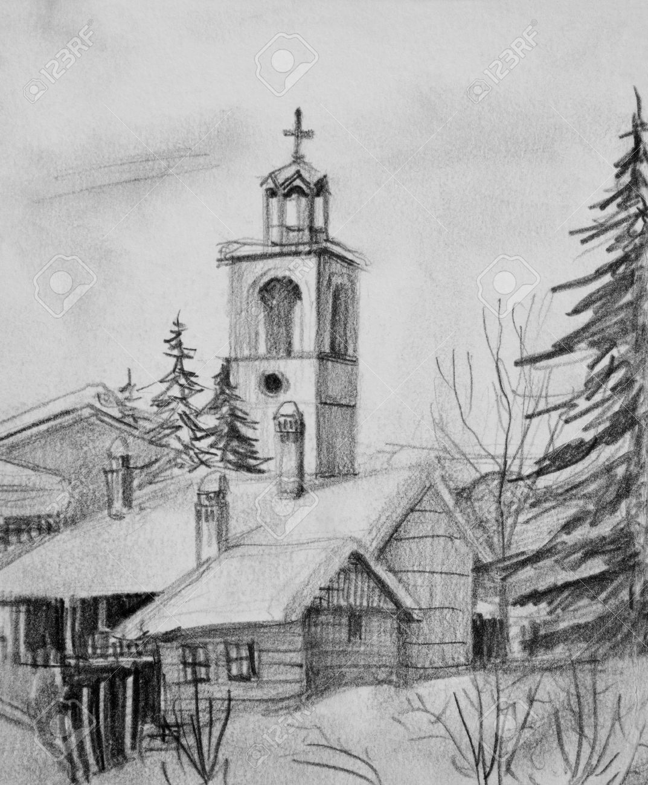

Папа Римский Иоанн Павел II принял 16 декабря
одного из лидеров Австрийской партии свободы Йорга Хайдера,
прибывшего
накануне
в Рим для участия в церемонии передачи Ватикану
рождественской елки. По существующей
традиции «главная елка Ватикана»,
украшающая на
Рождество площадь перед собором Святого Петра, доставляется
каждый
год из разных стран. В этом году
елку срубили
в Каринтии, губернатором которой
является Йорг Хайдер, получивший в этой
земле Австрии в марте 1999 г. 42% голосов
(в Австрии партия Хайдера последние годы имеет поддержку
24-29% избирателей).
Губернатор Каринтии посещает Италию уже второй раз
за последний год, прошлый раз его приезд был
ознаменован протестами ультралевых, на этот
раз к ним присоединился и протест правительства Израиля...
В наши дни карикатура "Известий", опубликованная в
одном из номеров газеты за 1991 год, вполне сошла
бы за богохульство и вызвала бы гнев так называемых "православных активистов"
В разгар войны в Южной Осетии Патриарх
Московский и Всея Руси Алексий II обратился
к Католикосу Грузии
Илие II и верующим Грузии. События,
произошедшие спустя полтора года в Абхазии,
настолько напоминают юго-осетинские, что мы нашли
уместным привести
тут обращение Первоиерарха Русской Православной
церкви, напечатанное в газете
«Известия»
№ 46 за 22 февраля
1991 года.
Предстоятель Русской
православной церкви Алексий
II 20 февраля направил письмо Святейшему
Католикосу — Патриарху Всея Грузии Илие II с
обращением к верующим этой республики. Патриарх Московский и Всея Руси пишет:
Ваше Святейшество и Блаженство! В эти
начальные дни спасительного поприща Великого Поста
я обращаюсь к Вашей Святыне с братским
приветствием по поводу пришедшей св. Четыредесятницы.
И, как велит православная традиция, прежде всего
испрашиваю у Вас прощения, если в минушем
году я соргрешил против Вас чем-то в слове,
деле или помышлении.
В Прощеное воскресенье правильно говорить «прости».
Таким образом мы просим Бога принять виноватого человека, но
готового меняться и становиться лучше.
Освоение земель Фороса началось в начале 50-х
годов XIX века после того, как Ялту и Севастополь
соединила шоссейная
дорога, построенная военными строителями. В честь
завершения
её строительства на перевале сооружается
портал — ворота, названные Байдарскими
по названию долины с одноименным селом.
Земли царских чиновников вблизи Фороса стали быстро
раскупать и застраивать. В начале 90-х годов
XIX столетия по просьбе православных близлежащих
селений «чайный магнат», имевший чайные
плантации на Цейлоне, А. Г. Кузнецов
(бывший владелец форосского имения) заказал проект
церкви известному архитектору, академику архитектуры
Николаю Михайловичу Чагину.
Церковь посвящалась чудесным событиям, произошедшим 17
октября 1888 года на станции Борки Курско-Харьковской
железной дороги: там, во время крушения поезда, шедшего
из Крыма в Петербург, спасся государь-император Александр
IIl и его семья. Поезд сошел с рельсов, но император не
пострадал.

Церковь на красной скале
Протоиерей Александр Мень был
убит утром 9 сентября 1990 года на тропинке к железнодорожной
станции «Семхоз». Неизвестный ударил его тяжелым
предметом (вероятно, топором) по голове. Священник дошел
до своего дома, рядом с которым умер от потери
крови. Предполагаемый убийца —
пьяница и уголовник
якобы просто спутал о. Александра с
другим человеком, тем более, что священник был
одет в гражданское платье.
Жители трех сел в Восточно-Казахстанской области
потребовали вернуть останки сакского царя назад в
гробницу, сообщает КТК. Они уверены, что духи, которых
потревожили археологи, наслали на них проклятие.
По словам жителей, их беды начались девять лет
назад, после того как археологи раскопали курган в
Шиликтинской долине. «После этого у нас погода
страшно изменилась. Зимой вообще снегопад, бури. Теперь
у нас давление», — заявила жительница
села Чиликты Айдурия Кумписова.
В 1887 году Джон Джозеф, называющий себя принцем
Нури и архиепископом Вавилона, сообщил, что нашёл
останки ковчега на Арарате. Спустя шесть лет он
пытался организовать экспедицию, чтобы разобрать Ковчег
и доставить его на всемирную выставку в Чикаго.
Он смог получить финансирование, но турецкое
правительство не дало разрешения на транспортировку
в случае, если Ковчег был бы найден. Сообщение
Нури считается крайне сомнительным из-за личности Нури,
использующего неподтвержденные титулы и проведшего
какое-то время в госпитале для умалишённых в Калифорнии[6].